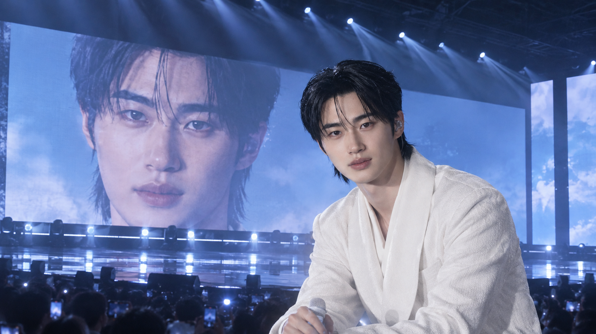
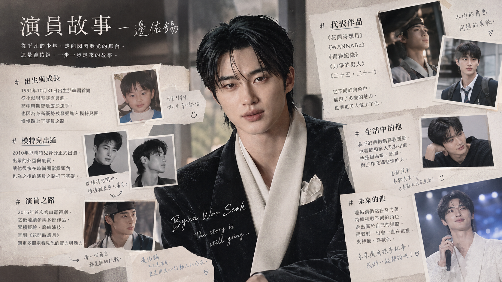
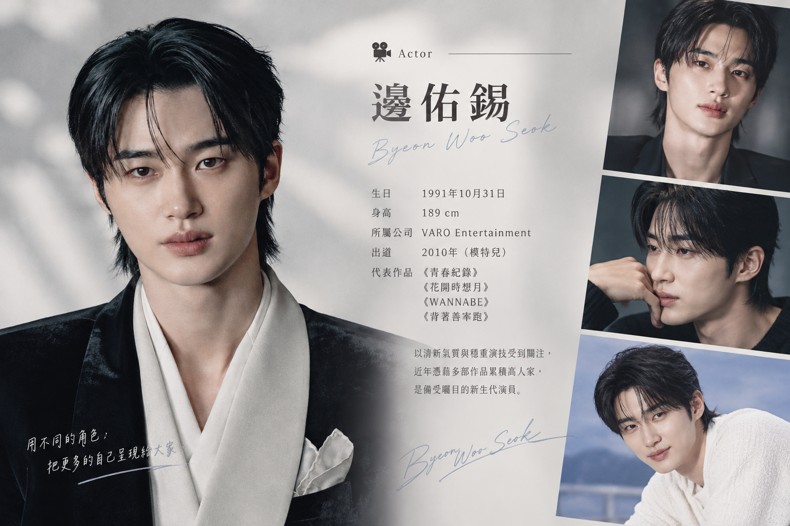
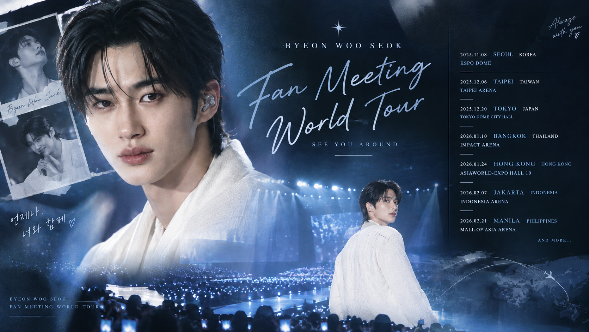
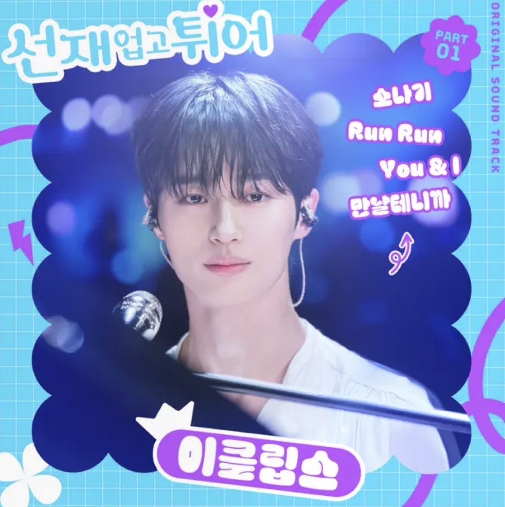

06DEC
2026
台北・台灣
TAIPEI ARENA · 19:30

OUR STORY
01 / 故事他是一名演員，用真誠的表演，讓故事有了溫度。
從模特兒出道，到在鏡頭前演繹不同人生，佑錫一步步走出自己的演員之路。每一次化身角色，都是一次全新的相遇；每個故事落幕後，熱愛表演的初心依然閃亮。
認識演員佑錫
THE ACTOR ON SCREEN
02 / 演員鏡頭前，他是故事裡的人物；鏡頭後，他是持續磨練、享受表演的演員。

01 — THE ACTORACTOR · VARO ENTERTAINMENT
演員・故事詮釋者
他是一名演員，細膩投入每個角色，讓人物的情緒真實抵達觀眾。從模特兒到演員，始終以真誠與努力，走在自己選擇的道路上。
本頁為粉絲向視覺概念設計；演員資訊請以所屬公司及官方公告為準。
SEE YOU SOON
03 / 相見把想念留給倒數，期待與演員佑錫相見。
06DEC
2026
TAIPEI ARENA · 19:30
17JAN
2027
KSPO DOME · 19:00
21FEB
2027
TOKYO GARDEN THEATER · 18:30
以下為粉絲向見面會場次概念，非官方行程；日期、地點及售票資訊請以官方公告為準。

PRESS PLAY, STAY A LITTLE
04 / 聆聽A LITTLE PREVIEW
聆聽 ECLIPSE 演唱的《Sudden Shower》，讓熟悉的旋律陪你走進故事裡的情緒。
ECLIPSE · LOCAL AUDIO
Sudden Shower · ECLIPSE